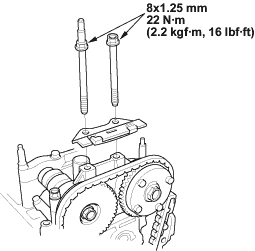
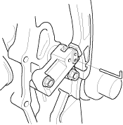
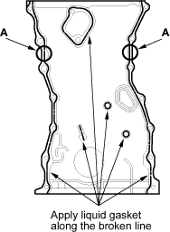
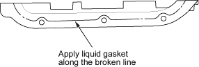

- Install the cam chain guide B.

- Remove the pin from the auto-tensioner.

- Check the chain case oil seal for damage. If the oil seal is damaged, replace the chain case oil seal (see page 6-23).

- Remove old liquid gasket from the chain case mating surfaces, bolts and bolt holes.
- Clean and dry the chain case mating surfaces.
- Apply liquid gasket, P/N 08C70-K0234M, 08C70-K0334M or 08C70-X0331S, evenly to the cylinder block mating surface of the chain case and to the inner threads of the holes.

- Apply liquid gasket to the cylinder block upper surface contact areas (A) on the chain case.
- Apply liquid gasket, P/N 08C70-K0334M or 08C70-X0331S, evenly to the oil pan mating surface of the chain case and to the inner threads of the holes.
NOTE: Do not install the parts if 5 minutes or more have elapsed since applying liquid gasket. Instead, reapply liquid gasket after removing old residue.
